IDLE
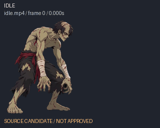
Hunched breathing and head movement

COMBAT
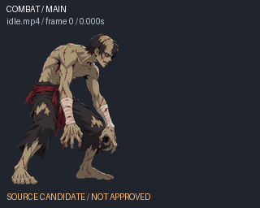
Single neutral guard frame from original idle

WALK_FORWARD
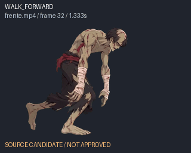
Forward stagger with alternating leg support
- LOOP_REVIEW: verify alternating planted feet and matching endpoint at one registered body scale.

WALK_BACK
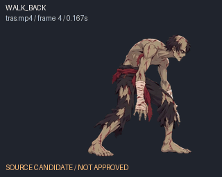
Backward stagger; support foot and cycle seam need registration
- LOOP_REVIEW: verify actual backward travel and alternating support; avoid sliding.

CROUCH
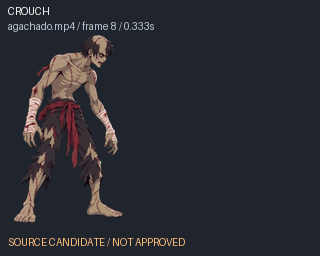
Body descends to hands-and-knee low posture

RISE
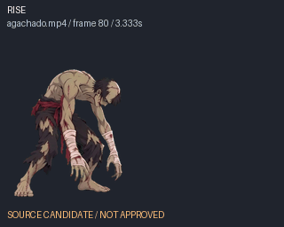
Actual recovery from low posture to standing

JUMP
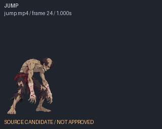
Crouched impulse followed by takeoff

FALL
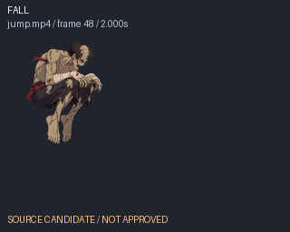
Airborne folded legs followed by descent

DASH
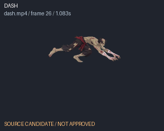
Forward low running lunge
- LOOP_REVIEW: running interval must close without visible snap; source speed line must be removed.

BACKDASH
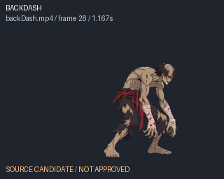
Hop and low recoil before returning to guard

LAND
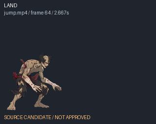
Crouched landing and torso recovery

LIGHT_JAB
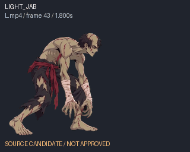
Real extended forward claw/straight-arm strike

MEDIUM_KICK
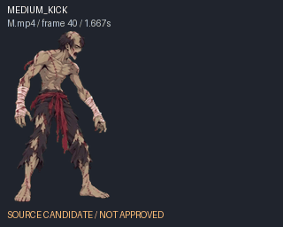
Original M is a shoulder/body lunge; no extended kicking leg visible
- SEMANTIC_REVIEW: M.mp4 shows a body charge, not a medium kick. Do not invent a kick or change combat data to hide this.

HEAVY_STRAIGHT
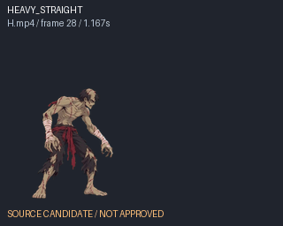
Overhead two-hand preparation followed by forward/downward swing
- SEMANTIC_REVIEW: H.mp4 is an overhead swing, not a straight punch. Match its real attack phase to the unchanged impact index.

DEFENSE_STAND
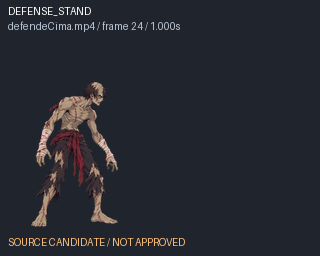
Standing raised forearm guard; hold phase ends in defensive pose

DEFENSE_CROUCH
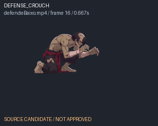
Kneeling forearm guard; hold phase ends defensively

HIT_STAND
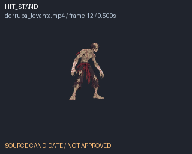
Candidate initial standing recoil before knockdown begins
- CANDIDATE_ONLY: no dedicated standing-hit file; recoil continues into knockdown, with no standalone standing recovery.
- ATTACHED_EFFECT: impact beam/star obscures head/body.

HIT_CROUCH
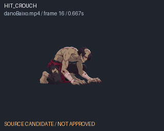
Low hit reaction rises and recoils before crouch recovery
- HEIGHT_REVIEW: reaction rises above the low posture; compare against crouch body/hurtbox.

HIT_AIR
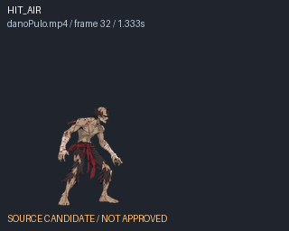
Visible backward airborne tumble and landing
- ATTACHED_EFFECT: source hit beam and shadows must not remain in the fighter sprite.

KNOCKDOWN
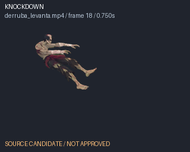
Complete backward collapse to prone posture

GROUNDED
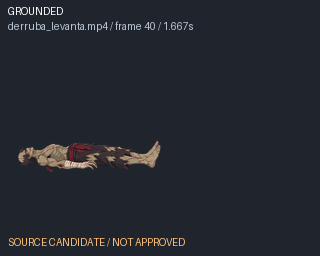
Actual prone interval between collapse and getup

GETUP
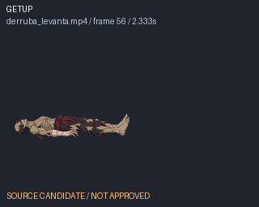
Original prone-to-standing spring recovery
- TRANSITION_REVIEW: source recovery springs quickly from prone to standing; verify continuity to grounded and idle.

CROUCH_LIGHT
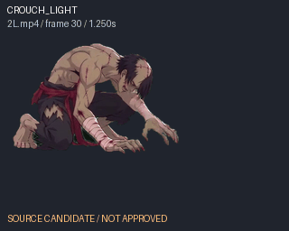
Low extended claw jab with real arm reach and recovery

CROUCH_MEDIUM
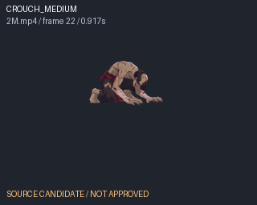
Low spinning sweep with extended leg
- ATTACHED_EFFECT: sweep ring overlaps the extended kicking leg.

CROUCH_HEAVY
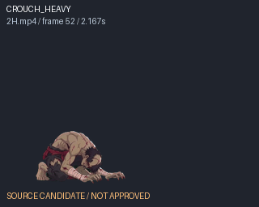
Original 2H rises to a chest-up recoil/roar; no raised striking arm visible
- SEMANTIC_REVIEW: 2H.mp4 rises into a roar/recoil; no clear uppercut or forward striking limb.

JUMP_LIGHT
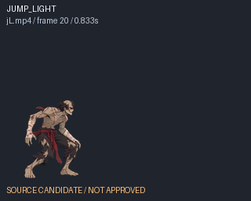
Real airborne high kick and leg recovery

JUMP_MEDIUM
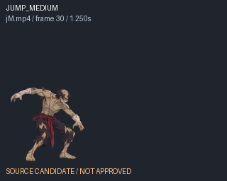
Airborne extended-arm strike with bent legs

JUMP_HEAVY
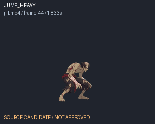
Overhead airborne two-hand attack; source has abrupt zoom
- ZOOM: large size discontinuities around video frames 65–70.
- ATTACHED_EFFECT: ring and limb ghosts overlap the fighter.

DEFENSE_AIR
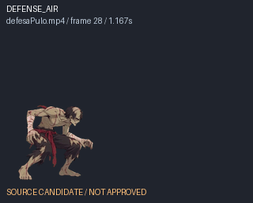
Raised crossed arms with bent airborne legs; defensive hold endpoint

ULTRA_BEAM
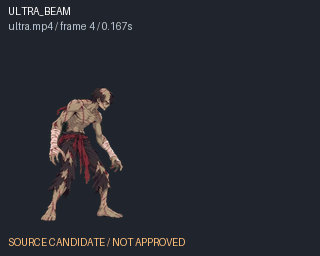
Roar, forward hand strike, overhead swing and ground slam
- FX_ALIGNMENT: original roar/strike/slam sequence must align with existing beam effect and unchanged frame data.

SPECIAL_ENERGY
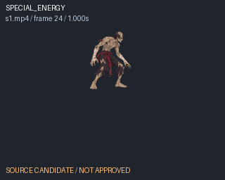
Low ground lunge and hand strike
- FX_ALIGNMENT: low hand strike must align with existing combat effect origin.

THROW_GRAB
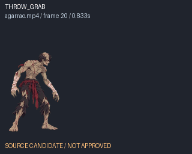
Reach and grab of source-video opponent
- SOURCE_OPPONENT: separate the embedded dark opponent without erasing P12 hands.

THROW_TOSS
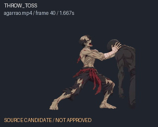
Grapple/bite and release; no distinct toss shown in these source phases
- SOURCE_OPPONENT: embedded opponent must not appear in the character sprite.
- SEMANTIC_REVIEW: bite/release visible, distinct toss not demonstrated.

SPECIAL_S2
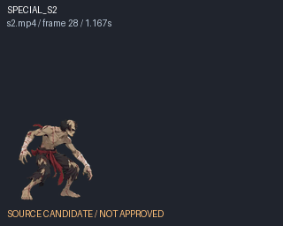
Rising airborne claw swing and landing
- ATTACHED_EFFECT: bright claw arc overlaps raised hands.

SPECIAL_S3
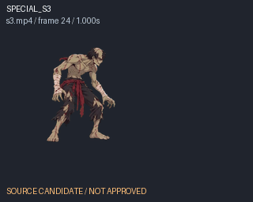
Chest-open windup and long forward claw strike

SPECIAL_S4
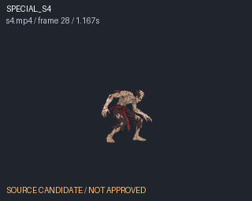
Full backward flip and recovery

SUPER_WAVE
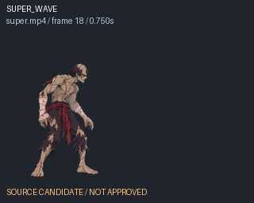
Multi-hit punch/knee/overhead slam action
- FX_ALIGNMENT: original combo must align to existing wave effect and unchanged frame data.

INTRO
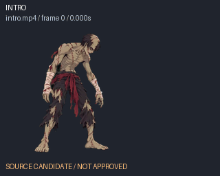
Head turns and torso lowers into zombie guard

JUMP_HEAVY_DOWN
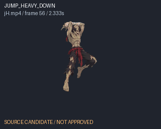
Candidate downward phase of original jH overhead attack
- CANDIDATE_ONLY: shared jH downward phase, not an independently confirmed downward-heavy clip.
- ZOOM_AND_EFFECTS: large size shifts and attached ring/limb ghosts.

VICTORY
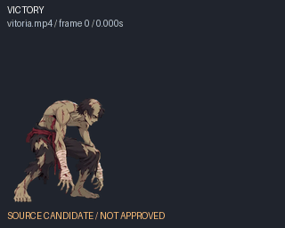
Body straightens and head tilts into victory posture

DEFEAT
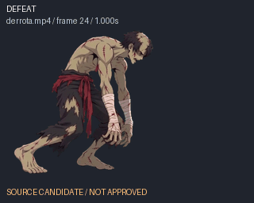
Kneeling collapse and persistent defeated posture

TAUNT
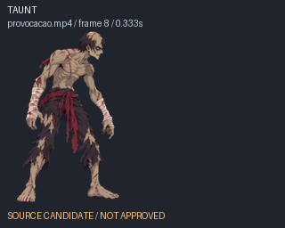
Head turn and raised beckoning claw before recovery